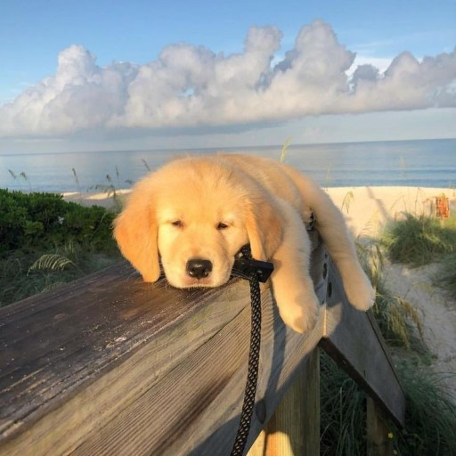

230517 : 오늘은 '나를 만들어가자' 라는 생각을 했다. 다른 사람들과는 다른, 특별한, 똑똑한, 재밌는 방식으로 나를, 하루를 만들어 나갈 것이라고 생각을 했다.
사는 대로 생각하는 것이 아닌, 생각하는 대로 사는 것이 내가 미치 실행하진 못했지만 추구하는 방식이기 때문에. 지금부터라도 노력하고 노력할 것이다. 아직 이러한 삶의 방향성을 설정하고 비로소 습관으로 만들고, 이를 통해 내가 원하는 방식으로서의 성공을 이뤄나가기에 늦지 않았다고 생각한다. 파이팅하자!
